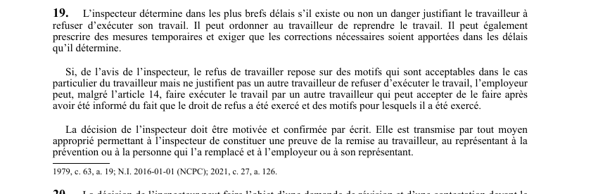

art-19-LSST : décision inspecteur sur refus
Un article du wiki ⚖️ Recueil législatif
En bref
L'inspecteur détermine dans les plus brefs délais s'il existe un danger, peut ordonner la reprise du travail, prescrire des mesures temporaires. Cette obligation vise l'inspecteur, le travailleur et l'employeur.
- Et exiger des corrections dans les délais fixés.
- Décision motivée et confirmée par écrit, transmise par moyen approprié permettant preuve de remise.
🌐 LegisQuébec · 📄 PDF officiel (page 10)
Texte officiel : capture du PDF

Toucher l'image pour l'agrandir🔗 Ouvrir a cette page : LSST.pdf : page 10 · texte a jour au 26 mars 2024
Voir aussi
- art. 17 : persistance du refus, remplacement autorisé · faculté : si le travailleur persiste dans son refus et que l'employeur et le représentant à la prévention estiment qu'il n'existe pas de danger ou que le refus repose sur des motifs personnels acceptables.
- art. 18 : demande d'intervention de l'inspecteur · faculté : après l'examen de la situation, l'intervention de l'inspecteur peut être requise par le travailleur persistant dans son refus, par le représentant à la prévention s'il croit à un danger, ou par l'employeur s'il croit qu'il n'y a pas de danger.
- art. 20 : révision décision inspecteur · faculté : la décision de l'inspecteur peut faire l'objet d'une demande de révision et d'une contestation devant le Tribunal administratif du travail (TAT) conformément aux articles 191.1 à 193 ; la décision a effet immédiat malgré une demande de révision.
- art. 21 : disposition remplacée · disposition remplacée.
- 🔧 Modifié par : LMRSST · Article modificateur de la LMRSST.
- ↑ Loi : LSST
Pages qui pointent ici (12)
- art-126-LMRSST : modifie l'art. 19 LSST Recueil législatif
- art-17-LSST : persistance du refus, remplacement autorisé Recueil législatif
- art-18-LSST : demande d'intervention de l'inspecteur Recueil législatif
- art-20-LSST : révision décision inspecteur Recueil législatif
- art-21-LSST : disposition remplacée Recueil législatif
- Délais clés en SST québécoise Recueil législatif
- Exercice du droit de refus Recueil législatif
- Index par profil Recueil législatif
- LSST : Chapitre II : Droits et obligations Recueil législatif
- LSST : Chapitre III : Droit de refus et retrait préventif Recueil législatif
- LSST, droits et obligations Droit du travail
- PDFs de jurisprudence et de doctrine Recueil législatif